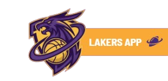
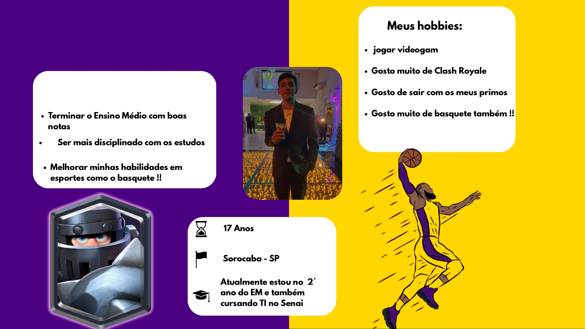

Sobre a Persona:
Trata-se da persona de um jovem de 17 anos, Ryan Luca Zamboni Pedro, natural de Sorocaba – SP, que está cursando o 2º ano do Ensino Médio e também fazendo curso de TI no Senai. Ele tem objetivos bem
definidos, como terminar o Ensino Médio com boas notas, ser mais disciplinado nos estudos e melhorar suas habilidades em esportes, especialmente o basquete, que é
uma de suas grandes paixões. Nos momentos de lazer, gosta de jogar videogame, é fã de Clash Royale, além de aproveitar o tempo para sair com seus primos. O basquete
também aparece não apenas como hobby, mas como um estilo de vida que faz parte de sua rotina e de seus interesses pessoais. Sua persona mistura a disciplina
acadêmica e profissional com um lado jovem, conectado e esportivo, equilibrando estudos, tecnologia, jogos digitais e esportes coletivos.
Mais Sobre o APP Realizado:
O LakeShow é o app criado especialmente para os super fãs dos Lakers de Los Angeles que adoram estar ligados à franquia. Idealizado para pessoas como o Ryan, estudante e fã de basquete, o app reúne em um só lugar:
- 🎥 Jogos Gravados e ao vivo: veja os jogos anteriores a hora que quiser e onde você estiver.
- 📊 Resultados e Números: acompanhe os placares e o que rola com o time.
- 📰 Notícias de primeira mão: receba as últimas sobre a franquia, os jogadores e tudo o que acontece por dentro.
- 📅 Próximos Jogos: fique por dentro de datas, horários e adversários.
- ⭐ Conteúdo Extra: análises, curiosidades históricas dos Lakers e muito mais.


Protótipos do APP sobre a persona do Ryan
Red Flags 🫧 - Squad 5 - Desenvolvimento de Sistemas - Sala 1B
👨💻 Desenvolvido Por Gabriel Ribeiro
👨💻 Ajudado por Luan Mendonça